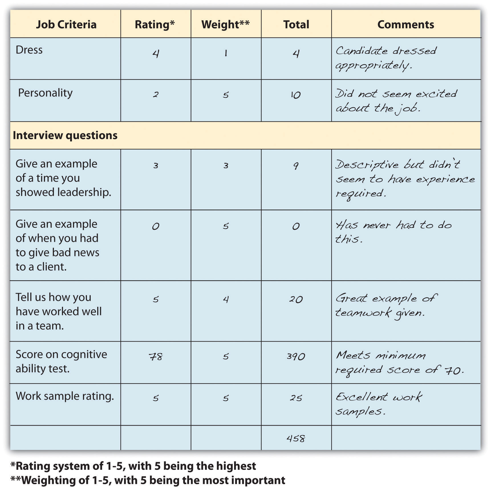

Many of us have or will sit in a waiting room with our best clothes on awaiting a job (or school) interview. You can feel your palms sweat and thoughts race as you wait for your name to be called. You look around at the office environment and imagine yourself walking through those doors everyday. People walk by and smile, and overall, you have a really good first impression of the organization. You hope they like you. You tell yourself to remember to smile, while recalling all your experience that makes you the perfect person for this job. A moment of self-doubt may occur, as you wonder about the abilities of the other people being interviewed and hope you have more experience and make a better impression than they do. You hear your name, stand up, and give a firm handshake to the HR manager. The interview has begun.
As she walks you back to a conference room, you think you see encouraging smiles as you pass by people. She asks you to take a chair and then tells you what the interview process will be like. She then asks the first question, “Tell me about yourself.” As you start discussing your experience, you feel yourself relax, just a little bit. After the interview finishes, she asks you to take a quick cognitive test, which you feel good about. She tells you she will be doing reference checks and will let you know by early next week.
To get to this point, the hiring manager may have reviewed hundreds of résumés and developed criteria she would use for selection of the right person for the job. She has probably planned a time line for hiring, developed hiring criteria, determined a compensation package for the job, and enlisted help of other managers to interview candidates. She may have even performed a number of phone interviews before bringing only a few of the best candidates in for interviews. It is likely she has certain qualities in mind that she is hoping you or another candidate will possess. Much work goes into the process of hiring someone, with selection being an important step in that process. A hiring process done correctly is time-consuming and precise. The interviewer should already have questions determined and should be ready to sell the organization to the candidate as well. This chapter will discuss the main components to the selection process.
The author introduces the chapter on employee selection.
Once you have developed your recruitment plan, recruited people, and now have plenty of people to choose from, you can begin the selection process. The selection processThe steps involved in choosing people who have the right qualifications to fill a current or future job opening. refers to the steps involved in choosing people who have the right qualifications to fill a current or future job opening. Usually, managers and supervisors will be ultimately responsible for the hiring of individuals, but the role of human resource management (HRM) is to define and guide managers in this process. Similar to the recruitment process discussed in Chapter 4 "Recruitment", the selection process is expensive. The time for all involved in the hiring process to review résumés, weight the applications, and interview the best candidates takes away time (and costs money) that those individuals could spend on other activities. In addition, there are the costs of testing candidates and bringing them in from out of town for interviews. In fact, the US Department of Labor and Statistics estimates the combined direct and indirect cost of hiring someone new can reach upwards of $40,000.Leroy Hamm, “Pre-Employment Testing,” IHD Corporation, n.d., accessed August 2, 2011, http://www.ihdcorp.com/articles-hr/pre-employment-testing.htm. Because of the high cost, it is important to hire the right person from the beginning and ensure a fair selection process. For example, the Austin, Texas, fire department calculated it would cost $150,000 to reinterview candidates, after the interview questions were leaked to the public, giving some candidates possibly unfair advantages in the interview process.KVUE News, “Re-Interview Process to Cost $150,000,” June 23, 2011, accessed August 2, 2011, http://www.kvue.com/news/local/AFD--124452379.html.
The selection process consists of five distinct aspects:
Criteria development. All individuals involved in the hiring process should be properly trained on the steps for interviewing, including developing criteria, reviewing résumés, developing interview questions, and weighting the candidates.
The first aspect to selection is planning the interview process, which includes criteria development. Criteria development means determining which sources of information will be used and how those sources will be scored during the interview. The criteria should be related directly to the job analysis and the job specifications. This is discussed in Chapter 4 "Recruitment". In fact, some aspects of the job analysis and job specifications may be the actual criteria. In addition to this, include things like personality or cultural fit, which would also be part of criteria development. This process usually involves discussing which skills, abilities, and personal characteristics are required to be successful at any given job. By developing the criteria before reviewing any résumés, the HR manager or manager can be sure he or she is being fair in selecting people to interview. Some organizations may need to develop an application or a biographical information sheet. Most of these are completed online and should include information about the candidate, education, and previous job experience.
Figure 5.2 The Selection Process at a Glance

We will discuss each of these aspects in detail in this chapter.
In a 2010 interview,Adam Bryant, “The X Factor When Hiring? Call It Presence,” June 26, 2010, New York Times, accessed July 12, 2011, http://www.nytimes.com/2010/06/27/business/27corner.html?scp=1&sq=Selander&st=cse&pagewanted=1. Robert Selander, then CEO of MasterCard, cited presence as one of the most important aspects to acing an interview. He describes how, in any large organization, an employee will be expected to engage with a variety of stakeholders, from a member of Congress to a contractor replacing the carpet in the building. He says that a good employee—at any level of the organization—should be able to communicate well but also be able to communicate to a variety of stakeholders. We discuss communication in Chapter 9 "Successful Employee Communication". Selander also says he will always ask the candidate about his or her weaknesses, but more importantly, how the candidate plans to address those weaknesses to make sure they do not become a barrier to success. He always asks the question “What can you do for us?” When asked if he could pose only one interview question, what would it be, his answer was, “Share with me two situations, work related that you are proud of, where something was achieved based on your own personal initiative and the other where the achievement was a result of the team getting something done that you could not have done alone.” In other words, Selander is looking for not only personal ability but the ability to work within a team to accomplish tasks. Selander offers advice to new college grads: try to find an organization where you can be involved and see all aspects of the business and be provided training to help you with certain skills that will be needed.
When was the last time you interviewed for a job? Did the process seem to flow smoothly? Why or why not?
Before we begin to review résumés and applications, we must have a clear idea of the person we want to hire for the position. Obviously, the job specifications will help us know the minimum qualifications, such as education level and years of experience. However, additional criteria might include the attitude of the potential hire, the ability to take initiative, and other important personal characteristics and professional abilities that may not always be demonstrated in an application or résumé. A specific score on a personality test, quality of work samples, and other tools to determine qualifications should be included as part of the criteria. In other words, knowing exactly what you want before you even begin the process of looking through résumés will make this process much easier. In human resources, this is called KSAOsKnowledge, skills, abilities, and other personal characteristics that make a person successful on the job., or knowledge, skills, abilities, and other personal characteristics that make a person successful on the job. Some organizations, such as the United States Department of Veterans Affairs, require applicants to address each one of the KSAOs listed in the job position within their cover letter.“What Are KSAs?” US Department of Veterans Affairs, accessed August 2, 2011, http://www.va.gov/jobs/hiring/apply/ksa.asp.
Many HR professionals and managers develop the criteria for hiring, as well as the interview questions, before reviewing any résumés. This allows for a streamlined process with specific guidelines already set before reviewing a résumé. For example, criteria for a project management job might include the following:
By setting criteria ahead of time, the hiring team has a clear picture of exactly what qualifications they are looking for. As a result, it is easier to determine who should move forward in the selection process. For example, if someone does not have a bachelor’s degree, given this is a criterion, their application materials can be filed away, perhaps for another job opening. Likewise, the HR manager can include those résumés with two or more years of experience and bachelor’s degree in the interview pile and then develop interview questions that show the candidates’ problem-solving, multitasking, and conflict-management abilities.
Résumé parsing or résumé scanning software is readily available and can make the initial screening easier. For example, Sovren software allows the HR manager to include keywords such as bachelor’s degree or management. This software scans all received résumés and selects the ones that have the keywords. While it still may be necessary to review résumés, this type of software can save time having to look through résumés that obviously do not meet the minimum qualifications.
The validityHow useful a tool is to measure a person’s attributes for a specific job opening. refers to how useful the tool is to measure a person’s attributes for a specific job opening. A tool may include any and all of the following:
Biographical information blanks (BIBs)A series of questions about a person’s history that may have shaped his or her behavior. are a useful part of the application process. A BIB is a series of questions about a person’s history that may have shaped his or her behavior. The BIB can be scored in the same way as an interview or a résumé, assuming the organization knows which types of answers are predictable for success in a given job. Similarly, a weighted application formInvolves selecting an employee characteristic to be measured and then identifying which questions on the application predict the desired behavior. Then scores are assigned to each predictor. involves selecting an employee characteristic to be measured and then identifying which questions on the application predict the desired behavior. Then scores are assigned to each predictor. Of course, the development of the scoring should be determined before any résumés and application forms have been reviewed. In other words, any tool you use to determine someone’s qualifications for a job should have validity to determine they are the right fit for the job.
ReliabilityThe degree in which selection techniques yield similar data over time. refers to the degree in which other selection techniques yield similar data over time. For example, if you ask the same interview question of every applicant for the project management position, and the “right” answer always yields similar, positive results, such as the hiring of a successful employee every time, the question would be considered reliable. An example of an unreliable test might occur with reference checks. Most candidates would not include a reference on their résumé who might give them a poor review, making this a less reliable method for determining skills and abilities of applicants.
Fit includes not only the right technical expertise, education, and experience but also fit in company culture and team culture. For example, at Facebook headquarters in Palo Alto, California, engineers are selected based on their willingness to take risks, as risk taking is nurtured at Facebook.Ellen McGirt, “Most Innovative Companies,” Fast Company, February 2010, accessed July 12, 2011, http://www.fastcompany.com/mic/2010/profile/facebook. In addition to this component of their company culture, the company looks for the “hacker” personality, because a hacker is someone who finds ways around the constraints placed upon a system. At Zappos, profiled in Chapter 4 "Recruitment", the company culture is one focused on customer service and the willingness of people to provide the best customer service in all aspects of the business. At Amazon, the huge online retailer, a core value in their company culture is a focus on developing leaders to grow with the organization. If a potential candidate is not interested in long-term career growth, he or she might not be deemed an appropriate strategic fit with the organization. In today’s organizations, most people are required to work within teams. As a result, fit within a team is as important as company culture fit. Microsoft, for example, does an immense amount of teamwork. The company is structured so that there are marketers, accountants, developers, and many others working on one product at a time. As a result, Microsoft looks for not only company culture fit but also fit with other team members.
Once we have developed our criteria for a specific job, we can begin the review process. Everyone prefers to perform this differently. For example, all the hiring decision makers may review all résumés, list the people they would like to meet in person, and then compare the lists. Another method might be to rate each candidate and interview only those above a certain score. This is discussed in Section 5.4.2 "Selection Methods". Obviously, much of the process will depend on the organization’s size and the type of job. None of this process can be done fairly without first setting criteria for the job.
When looking at résumés to determine whom to interview, a manager should be concerned with the concepts of disparate impact and disparate treatment. This is discussed in Chapter 4 "Recruitment". Disparate impact is unintended discrimination against a protected group as a whole through the use of a particular requirement. Disparate impact may be present in the interviewing process, as well as other employment-related processes such as pay raises and promotions. For example, a requirement of being able to lift 110 pounds might be considered as having disparate impact on women, unless the job requires this ability. Every criteria developed should be closely considered to see if it might have disparate impact on a protected group of individuals. For example, the requirement of a certain credit score might have a negative impact on immigrants, who may not have a well-developed credit rating. However, if being able to manage money is an important requirement of the job, this requirement might not be discriminatory.
Disparate treatment in hiring might include not interviewing a candidate because of one’s perception about the candidate’s age, race, or gender.
The last consideration is the hiring of internal versus external candidates. An internal candidateSomeone who applies for a position within the company who is already working for the company. is someone who already works within the organization, while an external candidateSomeone who works outside the organization. is someone who works outside the organization. A bidding process may occur to notify internal candidates of open positions. This is discussed in Chapter 4 "Recruitment". Generally speaking, it is best to go through a formal interview process with all candidates, even if they work within the organization. This way, an HR professional can be assured that disparate treatment does not occur because of favoritism. For example, a senior executive of your organization just left, and you believe the manager in that department is qualified to take over the position. Suppose, though, that the manager has been lobbying you for the job for some time and has even taken you out to lunch to talk about the job. While this person has maintained high visibility and lobbied for the promotion, there may be equally qualified internal candidates who did not use the same lobbying techniques. Automatically offering the position to this internal candidate might undermine others who are equally qualified. So while hiring internally can be a motivator, making assumptions about a particular person may not be a motivator to others. This is why it is best, even if you hire internally, to post a formal job announcement listing the job description and job qualifications, so everyone in the organization can have an equal opportunity to apply for the job.
Once you have completed the criteria for the particular job and narrowed down the field, you can begin the interview process. We discuss this in Section 5.3 "Interviewing".
Table 5.1 Possible Advantages and Disadvantages of Hiring an Internal versus an External Candidate
| Advantages | Disadvantages | |
|---|---|---|
| Internal Candidates | Rewards contributions of current staff | Can produce “inbreeding,” which may reduce diversity and difference perspectives |
| Can be cost effective, as opposed to using a traditional recruitment strategy | May cause political infighting between people to obtain the promotions | |
| Can improve morale | Can create bad feelings if an internal candidate applies for a job and doesn’t get it | |
| Knowing the past performance of the candidate can assist in knowing if they meet the criteria | ||
| External Candidates | Brings new talent into the company | Implementation of recruitment strategy can be expensive |
| Can help an organization obtain diversity goals | Can cause morale problems for internal candidates | |
| New ideas and insight brought into the company | Can take longer for training and orientation |
Poor Interviewer
As the assistant to the HR manager, one of your jobs is to help managers get ready to interview candidates. When you offer help to Johnathan, he says he has interviewed hundreds of people and doesn’t need your help in planning the interview process. When you sit in the interview with him, he asks inappropriate questions that you don’t feel really assess the abilities of a candidate. How would you handle this?
How Would You Handle This?
https://api.wistia.com/v1/medias/1360625/embedThe author discusses the How Would You Handle This situation in this chapter at: https://api.wistia.com/v1/medias/1360625/embed.
Interviewing people costs money. As a result, after candidates are selected, good use of time is critical to making sure the interview process allows for selection of the right candidate. In an unstructured interviewA type of interview in which questions are changed to match the specific applicant., questions are changed to match the specific applicant; for example, questions about the candidate’s background in relation to their résumé might be used. In a structured interviewA type of interview with a set of standardized questions based on the job analysis, not on the individual candidate’s résumé., there is a set of standardized questions based on the job analysis, not on individual candidates’ résumés. While a structured interview might seem the best option to find out about a particular candidate, the bigger concern is that the interview revolves around the specific job for which the candidate is interviewing. In a structured interview, the expected or desired answers are determined ahead of time, which allows the interviewer to rate responses as the candidate provides answers. This allows for a fair interview process, according to the US Office of Personnel Management.“Structured Interviews: A Practical Guide,” US Office of Personnel Management, September 2008, accessed January 25, 2011, https://apps.opm.gov/ADT/ContentFiles/SIGuide09.08.08.pdf. For purposes of this section, we will assume that all interviews you perform will be structured, unless otherwise noted.
Interview processes can be time-consuming, so it makes sense to choose the right type of interview(s) for the individual job. Some jobs, for example, may necessitate only one interview, while another may necessitate a telephone interview and at least one or two traditional interviews. Keep in mind, though, that there will likely be other methods with which to evaluate a candidate’s potential, such as testing. Testing is discussed in Section 5.4.1 "Testing". Here are different types of interviews:
It is likely you may use one or more of these types of interviews. For example, you may conduct phone interviews, then do a meal interview, and follow up with a traditional interview, depending on the type of job.
Most interviews consist of many types of questions, but they usually lean toward situational interviews or behavior description interviews. A situational interviewAn interview style in which the candidate is given a sample situation and asked how he or she might deal with the situation. is one in which the candidate is given a sample situation and is asked how he or she might deal with the situation. In a behavior description interviewA type of interview in which the candidate is asked questions about what he or she actually did in a variety of given situations., the candidate is asked questions about what he or she actually did in a variety of given situations. The assumption in this type of interview is that someone’s past experience or actions are an indicator of future behavior. These types of questions, as opposed to the old “tell me about yourself” questions, tend to assist the interviewer in knowing how a person would handle or has handled situations. These interview styles also use a structured method and provide a better basis for decision making. Examples of situational interview questions might include the following:
Examples of behavior description interview questions might include the following:
Examples of how to answer those difficult interview questions.
As you already know, there are many types of interview questions that would be considered illegal. Here are some examples:
Besides these questions, any specific questions about weight, height, gender, and arrest record (as opposed to allowable questions about criminal convictions) should be avoided.
HR professionals and managers should be aware of their own body language in an interview. Some habits, such as nodding, can make the candidate think they are on the right track when answering a question. Also, be aware of a halo effect or reverse halo effectThis occurs when an interviewer becomes biased because of one positive or negative trait a candidate possesses.. This occurs when an interviewer becomes biased because of one positive or negative trait a candidate possesses. Interview biasWhen an interviewer makes assumptions about the candidate that may not be accurate. can occur in almost any interview situation. Interview bias is when an interviewer makes assumptions about the candidate that may not be accurate.Jeff Lipschultz, “Don’t Be a Victim of Interview Bias,” Career Builder, June 15, 2010, accessed July 12, 2011, http://jobs.aol.com/articles/2010/06/15/interview-bias/. These assumptions can be detrimental to an interview process. Contrast biasA type of bias that occurs when comparing one candidate to others. is a type of bias that occurs when comparing one candidate to others. It can result in one person looking particularly strong in an area, when in fact they look strong compared to the other candidates. A gut feeling biasWhen an interviewer relies on an intuitive feeling about a candidate. is when an interviewer relies on an intuitive feeling about a candidate. Generalization biasA type of interview bias that occurs when an interviewer assumes that how someone behaves in an interview is how they always behave. can occur when an interviewer assumes that how someone behaves in an interview is how they always behave. For example, if a candidate is very nervous and stutters while talking, an assumption may be made that he or she always stutters. Another important bias called cultural noise biasA type of interview bias that occurs when a candidate thinks he or she knows what the interviewer wants to hear and answers the questions based on that assumption. occurs when a candidate thinks he or she knows what the interviewer wants to hear and answers the questions based on that assumption. Nonverbal behavior biasWhen the nonverbal behavior of an interviewer results in bias. occurs when an interviewer likes an answer and smiles and nods, sending the wrong signal to the candidate. A similar to me biasAn interviewer having a preference for a candidate because he or she views that person as sharing similar attributes. (which could be considered discriminatory) results when an interviewer has a preference for a candidate because he or she views that person as having similar attributes as themselves. Finally, recency biasInterview bias that occurs when the interviewer remembers candidates interviewed most recently more so than the other candidates. occurs when the interviewer remembers candidates interviewed most recently more so than the other candidates.
What are the dangers of a reverse halo effect?
Once the criteria have been selected and interview questions developed, it is time to start interviewing people. Your interviewing plan can determine the direction and process that should be followed:
As you can see, a large part of the interviewing process is planning. For example, consider the hiring manager who doesn’t know exactly the type of person and skills she is looking to hire but sets up interviews anyway. It is difficult, if not impossible, to determine who should be hired if you don’t know what you are looking for in the first place. In addition, utilizing time lines for interviewing can help keep everyone involved on track and ensure the chosen candidate starts work in a timely manner. Here are some tips to consider when working with the interview process:
Once you have successfully managed the interview process, it is time to make the decision. Section 5.4.1 "Testing" discusses some of the tools we can use to determine the best candidate for the job.
Can you think of a time when the interviewer was not properly trained? What were the results?
An exaggerated and funny example of an untrained interviewer.
Interview questions can revolve around situational questions or behavioral questions. Situational questions focus on asking someone what they would do in a given situation, while behavioral questions ask candidates what they have done in certain situations.
Besides the interview, we can also look at several other aspects that may predict success on the job. If any test is to be criteria for measuring a candidate, this should be communicated to each person interviewing, and criteria should be developed on specific test scores and expectations before interviewing and testing begins.
A variety of tests may be given upon successful completion of an interview. These employment tests can gauge a person’s KSAOs in relation to another candidate. The major categories of tests include the following:
A number of written tests can be administered. A cognitive ability testMeasures a candidate’s aptitudes or achievements. can measure reasoning skills, math skills, and verbal skills. An aptitude testMeasures a person’s ability to learn new skills. measures a person’s ability to learn new skills, while an achievement testMeasures someone’s current knowledge. measures someone’s current knowledge. Depending on the type of job, one or both will be better suited.
A cognitive ability test measures intelligences, such as numerical ability and reasoning. The Scholastic Aptitude Test (SAT) is an example of a cognitive ability test. It is important to note that some cognitive ability tests can have disparate impact. For example, in EEOC v. Ford Motor Co. and United Automobile Workers of America, African Americans were rejected from an apprentice program after taking a cognitive test known as the Apprenticeship Training Selection System (ATSS).“Employment Tests and Selection Procedures,” US Equal Employment Opportunity Commission, accessed August 2, 2011, http://www.eeoc.gov/policy/docs/factemployment_procedures.html. The test showed significant disparate impact on African Americans, and it was then replaced by a different selection procedure, after costing Ford $8.55 million. Some sample test categories might include the following:
Aptitude tests can measure things such as mechanical aptitude and clerical aptitude (e.g., speed of typing or ability to use a particular computer program). Usually, an aptitude test asks specific questions related to the requirements of the job. To become a New York City police offer, for example, an aptitude test is required before an application will be considered. The written exam is given as a computerized test at a computerized testing center in the city. The test measures cognitive skills and observational skills (aptitude test) required for the job.“Exam Schedule,” New York Police Department, accessed August 2, 2011, http://www.nypdrecruit.com/exam-center/exam-overview.
Personality tests such as Meyers-Briggs and the “Big Five” personality factors may be measured and then compared with successful employee scores. For example, The University of Missouri Health Care system recently launched a patient satisfaction initiative as part of its strategic plan. The plan includes training for current employees and personality testing for nursing, managerial, and physician candidates.Janese Silvey, “MU Health Care to Renew Satisfaction Effort,” Columbia Daily Tribune, August 2, 2011, accessed August 2, 2011, http://www.columbiatribune.com/news/2011/aug/02/mu-health-care-to-renew-satisfaction-effort/. The goal of the test is to assess talent and to see if the candidate has the potential to meet the expectations of patients. They hired a private company, Talent Plus, who conducts the test via phone interviews. However, many companies administer tests themselves, and some tests are free and can be administered online.
The Big Five personality test looks at extroversion, agreeableness, conscientiousness, neuroticism, and openness. Self-assessment statements might include the following:
Some institutions also require physical ability tests; for example, to earn a position in a fire department, you may have to be able to carry one hundred pounds up three flights of stairs. If you use tests in your hiring processes, the key to making them useful is to determine a minimum standard or expectation, specifically related to the requirements of the job. An HR manager should also consider the legality of such tests. In the EEOC v. Dial Corp. case,“Employment Tests and Selection Procedures,” US Equal Employment Opportunity Commission, accessed August 2, 2011, http://www.eeoc.gov/policy/docs/factemployment_procedures.html. women were disproportionately rejected for entry-level positions. Prior to the test, 46 percent of hires were women, but after implementation of the test, only 15 percent of the new hires were women. The Equal Employment Opportunity Commission (EEOC) established that the test was considerably more difficult than the job, resulting in disparate impact. Physical ability tests need to show direct correlation with the job duties.
A job knowledge testMeasures the candidate’s level of understanding about a particular job. measures the candidate’s level of understanding about a particular job. For example, a job knowledge test may require an engineer to write code in a given period of time or may ask candidates to solve a case study problem related to the job.
Work sample testsAn employment test that asks candidates to show examples of work they have already done. ask candidates to show examples of work they have already done. In the advertising business, this may include a portfolio of designs, or for a project manager, this can include past project plans or budgets. When applying for a pharmaceutical representative position, a “brag book” might be required.Katharine Hansen, “So, You Want to Get into Paramedical Sales?” n.d., Quintessential Careers, accessed August 2, 2011, http://www.quintcareers.com/pharmaceutical_sales_careers.html. A brag book is a list of recommendation letters, awards, and achievements that the candidate shares with the interviewer. Work sample tests can be a useful way to test for KSAOs. These work samples can often be a good indicator of someone’s abilities in a specific area. As always, before looking at samples, the interviewer should have specific criteria or expectations developed so each candidate can be measured fairly.
Once the interview is completed and testing occurs, other methods of checking KSAOs, including checking references, driving records, and credit history, can be performed. Some companies even use Facebook as a way of gauging the candidate’s professionalism.
Reference checking is essential to verify a candidate’s background. It is an added assurance that the candidate’s abilities are parallel with what you were told in the interview. While employment dates and job titles can be verified with previous employers, many employers will not verify more than what can be verified in the employment record because of privacy laws. However, if you do find someone who is willing to discuss more than just dates and job titles, a list of questions is appropriate. Some of these questions might include the following:
If a candidate will be driving a company car or vehicle, such as a UPS truck, driving records may be checked. Criminal background checks may also be used if the position will include interaction with the public. If the position requires handling of money, a credit check may be required, although a written notice is required to be given to the candidate before the credit check is carried out. In addition, written permission must be provided to the credit agency, and the applicants must receive a copy of the report and a copy of their rights under the Consumer Credit Reporting Reform Act (CCRRA). All these types of tests can be used to determine if someone has been honest about their past employment.
Some companies require drug testing, which causes some debate. While some organizations say this is a safety issue (and pay lower insurance premiums), others say it is an invasion of privacy. As long as drug tests are administered for a defensible reason (safety), many organizations will continue to require them. Some organizations will also require physical examinations to ensure the candidate can perform the tasks required. A final form of testing is the honesty test. A number of “what would you do” questions are asked. The challenge with this type of test is that many people know the “right” answer but may not be honest in their responses.
Table 5.2 Reasons Why Employers Acted upon Data Found on Social Networking Sites
| Provocative or inappropriate photos or info | 53% |
| Drinking or drug use | 44% |
| Badmouthing previous employer, colleague, or client | 35% |
| Poor communication skills | 29% |
| Discriminatory comments | 26% |
| Lied about qualifications | 24% |
| Leaked confidential information about previous job | 20% |
Source: Kit Eaton “If You’re Applying for a Job, Censor Your Facebook Page,” Fast Company, August 19, 2009, accessed January 27, 2011, http://www.fastcompany.com/blog/kit-eaton/technomix/if-youre-applying-job-censor-your-facebook-page.
Forty-five percent of organizations use social networking such as Facebook, Twitter, or LinkedIn to gather information about potential candidates.Kit Eaton, “If You’re Applying for a Job, Censor Your Facebook Page,” Fast Company, August 19, 2009, accessed January 27, 2011, http://www.fastcompany.com/blog/kit-eaton/technomix/if-youre-applying-job-censor-your-facebook-page. See Table 5.2 "Reasons Why Employers Acted upon Data Found on Social Networking Sites" for the types of data found on social networking sites that disqualified candidates, according to an article by Fast Company. This can be an effective method to see the kind of image the candidate portrays in his or her personal time.
How to answer that famous “tell me about yourself” question in an interview.
A clinical selection approachThe decision makers review the data and, based on what they learn from the candidate and the information available to them, decide who should be hired for a job. is probably the most common selection method, and it involves all who will be making the decision to hire a candidate. The decision makers review the data and, based on what they learn from the candidate and the information available to them, decide who should be hired for a job. Because interviewers have a different perception about the strengths of a candidate, this method leaves room for error. One consideration is disparate treatment, in which one’s biases may result in not hiring candidates based on their age, race, or gender. One way to handle this and limit the personal stereotypes and perceptions of the interviewers is to use a statistical methodA selection method in which a selection model is developed that assigns scores and weights on various factors, such as personality, answers to interview questions, and test scores. in hiring.
In the statistical method, a selection model is developed that assigns scores and gives more weight to specific factors, if necessary. For example, for some jobs, the ability to work in a team might be more important, while in others, knowledge of a specific computer program is more important. In this case, a weight can be assigned to each of the job criteria listed. For example, if the job is a project manager, ability to work with the client might be more important than how someone dresses for the interview. So, in the example shown in Figure 5.4 "Sample Selection Model, with Sample Scores and Weighting Filled In", dress is weighted 1, while being able to give bad news to a client is weighted 5. In the example, the rating is multiplied by the weight to get the score for the particular job criteria. This method allows for a fairer process and can limit disparate treatment, although it may not limit disparate impact. A statistical method may work like this: you and the hiring team review the job analysis and job description and then determine the criteria for the job. You assign weights for each area and score ranges for each aspect of the criteria, rate candidates on each area as they interview, and then score tests or examine work samples. Once each hiring manager has scored each candidate, the hiring team can compare scores in each area and hopefully hire the best person in the best way. A sample candidate selection model is included in Figure 5.4 "Sample Selection Model, with Sample Scores and Weighting Filled In".
With the statistical approach, there is more objectivity than with the clinical approach. Statistical approaches include the compensatory model, multiple cutoff model, and the multiple hurdle model. In the compensatory modelA statistical method of scoring applicants, this model permits a high score in an important area to make up for a lower score in another area., a similar method of scoring is used as the weighted model but permits a high score in an important area to make up for a lower score in another area. In our Figure 5.4 "Sample Selection Model, with Sample Scores and Weighting Filled In" example, ability to give bad news to a client might outweigh a test score. These decisions would be made before the interviews happen.
A multiple cutoff modelA statistical method of scoring applicants that requires a candidate to have a minimum score level on all selection criteria. requires that a candidate has a minimum score level on all selection criteria. In our Figure 5.4 "Sample Selection Model, with Sample Scores and Weighting Filled In" example, the candidate may be required to have a score of at least 2 out of 5 on each criteria. If this was the case, the candidate in Figure 5.4 "Sample Selection Model, with Sample Scores and Weighting Filled In" scored low on “bad news to a client,” meaning he or she wouldn’t get the job in a multiple cutoff model. In the multiple hurdle modelA statistical method of scoring applicants that allows only candidates with high (preset) scores to go to the next stages of the selection process., only candidates with high (preset) scores go to the next stages of the selection process. For example, the expectations might be to score a 4 on at least three of the items in Figure 5.4 "Sample Selection Model, with Sample Scores and Weighting Filled In". If this were the case, this candidate might make it to the next level of the selection process, since he or she scored at least a 4 on three criteria areas.
Once the discussion on whom to hire has occurred and a person has been selected, the final phase of the process is to make an offer to the candidate. This is discussed in Section 5.5 "Making the Offer".
Figure 5.4 Sample Selection Model, with Sample Scores and Weighting Filled In
Oftentimes once the decision is made to hire a candidate, HR professionals feel their job is finished. But making the offer to the chosen candidate can be equally as important as the interview process. If the offer is not handled properly, you can lose the candidate, or if the candidates takes the job, he or she could start off on the wrong foot.
According to Paul Falcone, vice president for human resources at the Fortune 500 company Time Warner, detailed information should be asked of the candidate before the offer is even made.Paul Falcone, “The New Hire: Five Questions to Ask before Making the Job Offer,” n.d., Monster.com, accessed July 13, 2011, http://hiring.monster.com/hr/hr-best-practices/recruiting-hiring-advice/acquiring-job-candidates/making-a-job-offer.aspx. He says that as soon as the offer is made, power is shifted to the candidate. To handle this, he suggests asking salary questions in the interview, including the following:
Asking these questions can assist in qualifying candidates, based on salary expectations. For example, if a candidate requests 20 percent more than you are able to pay for the job, this discussion can be had before the offer is even made, perhaps making this candidate no longer viable.
Once you have determined in the interview process that the salary expectation is in the range of what you can offer, the first step is to make the offer as soon as the decision is made. In a tight labor market, waiting a week or two may impact your ability to hire your first choice. You probably already have a salary range in mind and can begin to narrow down the offer based on the individual’s KSAOs. Based on the range of salary you can offer, consider the following questions when making the offer to a candidate:
Once the offer has been made, it is reasonable to give the candidate some time to decide, but not too long, as this can result in losing other candidates should this candidate reject the job offer. It is likely the candidate may come back and ask for higher salary or benefits. Some tips to successfully negotiate are included below and in Video 5.4:
Once the phone call is made and the candidate accepts the offer, an e-mail or formal letter should follow, outlining details of the employment agreement. The employment agreement or offer letter should include the following:
Once the pay and benefits package has been successfully negotiated and the offer letter (or e-mail) sent, you should clarify acceptance details in writing and receive confirmation of the start date. It is not unusual for people in higher-level positions to need a month or even two to transition from their old jobs. During this period, make sure to stay in touch and even complete the new hire paperwork in the meantime.
This lively video, using the movie Pirates of the Caribbean, offers great analysis and tips on how to successfully negotiate just about anything.
Summary
The author provides a video summary of the chapter.
The Four-Fifths Rule
The four-fifths rule is a way of measuring adverse impact in selection processes of organizations. It works like this: assume your organization requires a cognitive test for employment. You set a test score of 70 as the required pass rate for the candidate to be considered for an interview. Based on our numbers, if 50 percent of men passed this test with a score of 70, then four-fifths or 40 percent of women should also be able to pass the test. You might calculate it like this:
| Gender | Total who scored 70 or above | Total who took the test | Percent |
|---|---|---|---|
| Male | 52 | 62 | 83.8 or 84% passed |
| Female | 36 | 58 | 62.07 or 62% |
If you divide the total of who scored above 70 by the total number who took the test, it shows the percentage of 84 percent passed the test. If you divide the number of women who passed by the total number of women who took the test, you come up with 62 percent. Then divide 62 percent by 84 percent (62/84 = 73.8%). The resulting 74 percent means that it is below the 80 percent or the four-fifths rule, and this test could be considered to have disparate impact.
52/62 = 84% of men who took the test passed the test 36/58 = 62% of women who took the test passed the test 62/84 = 73.8%, less than 80%, which could show disparate impactThis is only an indicator as to how the selection process works for the organization, and other factors, such as sample size, can impact the reliability of this test. Using the tables below, please calculate possible disparate impact and then answer the questions that follow.
| National Origin | Passing Test Score | Total Number Taking the Test | Percent |
|---|---|---|---|
| Caucasians | 56 | 89 | |
| Minority groups | 48 | 62 |
| Age | Passing Test Score | Total Number Taking the Test | Percent |
|---|---|---|---|
| People under 40 | 28 | 52 | |
| People over 40 | 23 | 61 |
| Gender | Passing Test Score | Total Number Taking the Test | Percent |
|---|---|---|---|
| Male | 71 | 82 | |
| Female | 64 | 85 |
Please calculate the above numbers using the four-fifths rule. Based on your calculation: